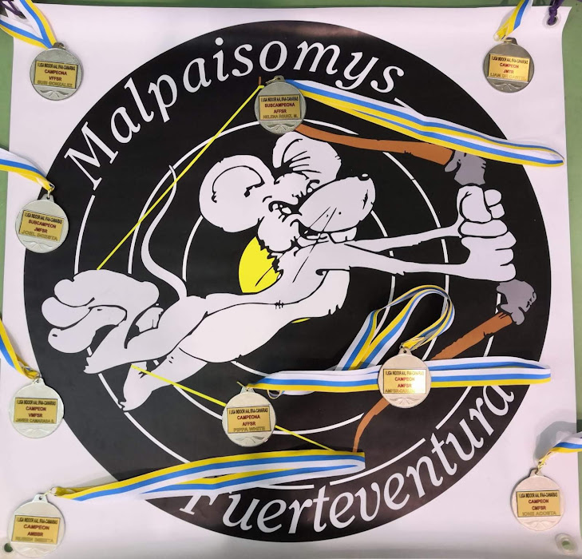
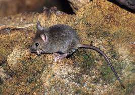

El Club
El Club Malpaisomys, es un club dedicado al noble deporte del tiro con arco. Nuestro club pone la mayor parte de su empeño a formar arqueros desde las edades más tempranas hasta las más veteranas sin excepción.
La formación del club está a cargo de unos de los arqueros con más experiencia del archipiélago canario, conocido en los mejores clubes de tiro con arco del país y con un palmarés envidiable cosechado durante una larga trayectoria, el maestro arquero Carlos Pey. Carlos instruyó a muchos deportistas creando en ellos una base solida, tan necesaria en este deporte y que hoy son respetados arqueros a nivel canario y que incluso han llegado a ser podium a nivel mundial.
El Club Malpaisomys tiene un ambiente amistoso, relajado, sin presiones competitivas más allá que las que uno se quiera poner, eso si, este club tiene todo lo necesario para que llegues a la meta que te pongas, con el apoyo de su maestro y el resto de arqueros que siempre están dispuestos a echarte una mano
Origen del Logo
Nuestro logo, se diseñó, haciendo un pequeño homenaje, a un tipo de roedor, ya extinto, que habitaba en nuestras islas.
Ratón del malpaís / Malpaisomys InsularisDESCRIPCIÓN Nombre científico Malpaisomys Insularis. Roedor de cuerpo pequeño, cola ligeramente corta y con extremidades adaptadas a la escalada. Llegaba a un tamaño aproximado de 20 cm y a los 40 gramos de peso. Su nombre viene de los famosos malpaíses donde se han encontrado la mayoría de sus restos fósiles, pero no estaba restringido a este tipo de formaciones volcánicas, sino que ocupaba todos los hábitats de estas dos islas ya que se han encontrado fósiles por diversas zonas. Su dieta era básicamente herbívora y consumía gran cantidad de gramíneas, aunque no se descarta que se alimentara también de frutos. La disminución de este roedor hasta su extinción puede haberse debido a la llegada de los primeros colonizadores europeos, hace aproximadamente 800 años y a la introducción de la rata negra, que trajo consigo enfermedades y parásitos. El análisis molecular mostró que está muy relacionado con el género Mus y otros estudios han determinado que los ejemplares de Fuerteventura eran de un tamaño superior a los de Lanzarote.